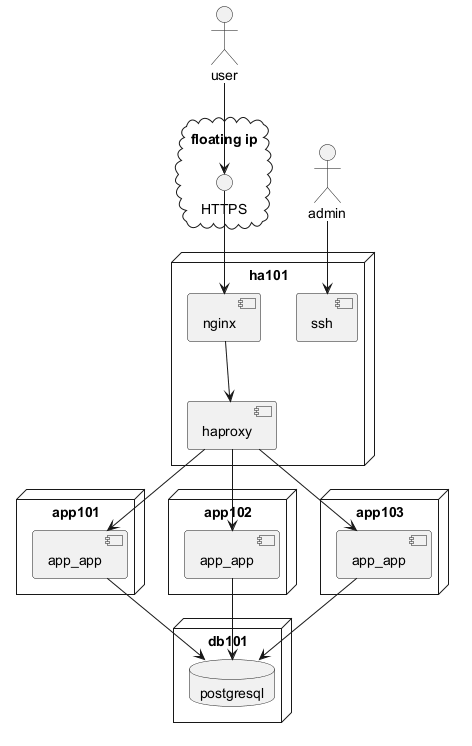

@startuml
actor user
actor admin
cloud "floating ip" {
interface HTTPS as ha_https
}
node "ha101" {
component haproxy as ha101_haproxy
component ssh as ha101_ssh
component nginx as ha101_nginx
ha101_nginx --> ha101_haproxy
ha_https --> ha101_nginx
}
node "app101" {
component app_app as app101_app
}
node "app102" {
component app_app as app102_app
}
node "app103" {
component app_app as app103_app
}
node "db101" {
database postgresql as db101_postgresql
}
app101_app --> db101_postgresql
app102_app --> db101_postgresql
app103_app --> db101_postgresql
user --> ha_https
ha101_haproxy --> app101_app
ha101_haproxy --> app102_app
ha101_haproxy --> app103_app
admin --> ha101_ssh
@enduml